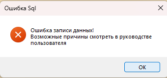

В этом разделе описаны наиболее распространённые ошибки, которые могут возникнуть при работе с программой «Архивный фонд», и способы их устранения.

Рис. 1. Пример сообщения об ошибке в программе
Содержание раздела:
— 4.2.1. Ошибка подключения к серверу
— 4.2.2. Ошибка при сохранении данных
— 4.2.3. База данных не найдена или не соответствует структуре
Общие рекомендации при возникновении любых ошибок
1. Запишите текст ошибки — это поможет при обращении в службу поддержки.
2. Проверьте подключение к серверу — убедитесь, что сервер MySQL запущен и доступен.
3. Проверьте файл config.ini — правильность параметров подключения.
4. Создайте резервную копию перед выполнением операций, которые могут повлиять на данные.
5. Обратитесь к администратору — многие ошибки требуют прав администратора базы данных.
Таблица ошибок и их коды
| Тип ошибки | Описание |
|---|---|
| Ошибка подключения | Не удаётся установить соединение с сервером MySQL (раздел 4.2.1) |
| Ошибка сохранения | Ошибка при добавлении, редактировании или удалении записи (раздел 4.2.2) |
| Ошибка структуры БД | База данных не найдена или её структура не соответствует ожидаемой (раздел 4.2.3) |
| Ошибка авторизации | Неверный логин или пароль, либо логин не найден (раздел 1.5) |
| Ошибка целостности | Нарушение внешнего ключа (например, попытка удалить группу, к которой привязаны студенты) |
| Ошибка шаблона | Файл шаблона для печати не найден (раздел 2.5.1) |
| Ошибка прав доступа | Недостаточно прав для выполнения операции (например, попытка редактирования пользователя не-администратором) |